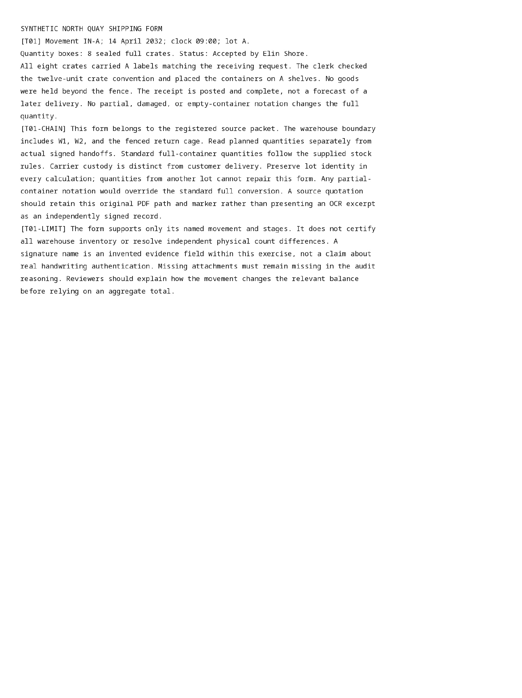

runs/08-scanned-inventory-mixed/extraction/D00008/attempt-5bvezmai/pdf-page-0001-raster.png
Open / download original bytes

validation/runs/08-scanned-inventory-mixed/extraction/D00008/attempt-5bvezmai/pdf-page-0001-raster.png · 430,237 bytes · SHA-256 411d1c409a32c93463babde37041aca75d8fa5203b0717d4af7e472956c923fd
